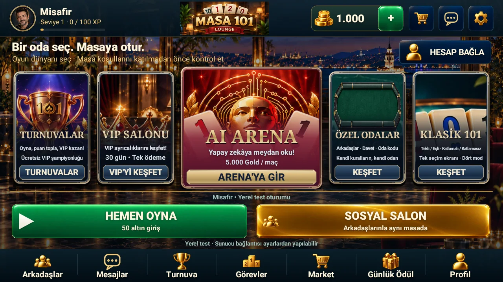
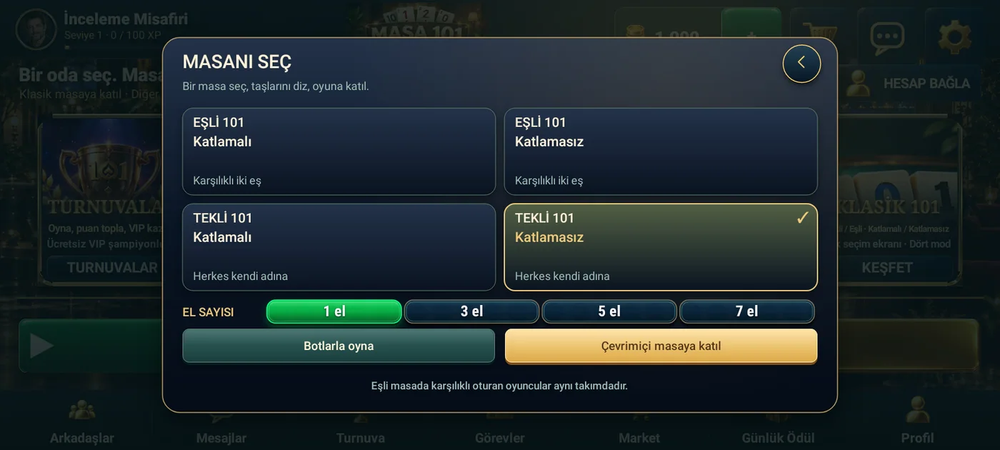

PROCİNALP / MASA OYUNLARI
101 Lounge.
Taşların etrafında.
Ahşap ıstaka, derin yeşil keçe, gece manzarası. Mevcut test sürümünün oyun masasına yakından bak.
TEST SÜRÜMÜ / GENEL YAYIN DOĞRULANMADI

MASANIN DÜZENİ
Önce taşlarını,
sonra hamleni düşün.
Mevcut masa görüntüsünde altta oyuncunun ıstakası, ortada gösterge ve çekme alanı, çevrede diğer oyuncuların yerleri bulunuyor. Eylem satırında taş çekme, taş atma, açma ve işleme kontrolleri görülüyor.
Gösterilen sahne misafir ve botlarla hazırlanmış yerel bir test oturumuna ait. Görsellerdeki altın değerleri, sıralamalar veya masa seçenekleri canlı kullanıcı hesabı ya da satın alma teklifi değildir.
Hangi durum doğrulandı?
Mevcut yerel test materyalleri ve Android test paketleri var. Herkese açık mağaza yayını ve çevrimiçi hizmetin genel kullanıma hazır olduğu bu incelemede doğrulanmadı.
Bu nedenle “hemen indir”, “canlı turnuvaya katıl” veya ödeme çağrısı sunmuyoruz. Görsel vitrini inceleyebilirsin.
MEVCUT TESTTEN
Masa. Lobi. Seçimler.
Bu görüntüler arşivdeki yerel test sürümüne aittir. Arayüz ve test ekonomisi sonraki sürümlerde değişebilir.
Görsele dokun, ayrıntıları incele.




OYUNU TANIMAK
Masa seçerken neye bakmalı?
Tekli ve eşli
Testteki masa seçimi, Tekli 101 ve Eşli 101 seçeneklerini ayrı gösteriyor. Eşli seçenek açıklaması karşılıklı oturan iki oyuncuyu aynı takımda tanımlıyor. Bir masaya geçmeden önce seçili oyun biçimini okumak, bireysel oyunla takım oyununu karıştırmayı önler.
Katlamalı ve katlamasız
İki seçenek de arayüzde var. Ancak burada bütün puan kurallarını doğrulanmış ürün davranışı gibi yeniden yazmıyoruz. Genel 101 alışkanlıklarının her masada aynı olduğunu varsaymak yerine, oynanan sürümdeki masa kuralını kontrol etmek gerekir.
Istakayı okumak
Genel bir hazırlık yöntemi olarak aynı renkte ardışık taşları ve farklı renklerde aynı sayıları ayrı düşün. Bir taşı hemen yerinden oynatmak yerine hangi olası grubu bozduğuna bak. Bu öneri, belirli bir elin en iyi hamlesini veya oyundaki açılış koşulunu garanti etmez.
Görsellerdeki oyuncular gerçek kullanıcılar mı?
Seçilen masa, misafir/bot yerel test görüntüsüdür. Gerçek oyuncu listesi, kişisel sohbet, hesap ayrıntısı veya ödeme ekranı yayımlanmamıştır.
Web sitesinden oynanabilir mi?
Bu bölüm görsel ve içerik vitrinidir; oyun sunucusu değildir. Oyun hesabı açmaz, APK dağıtmaz ve gerçek ödeme başlatmaz.